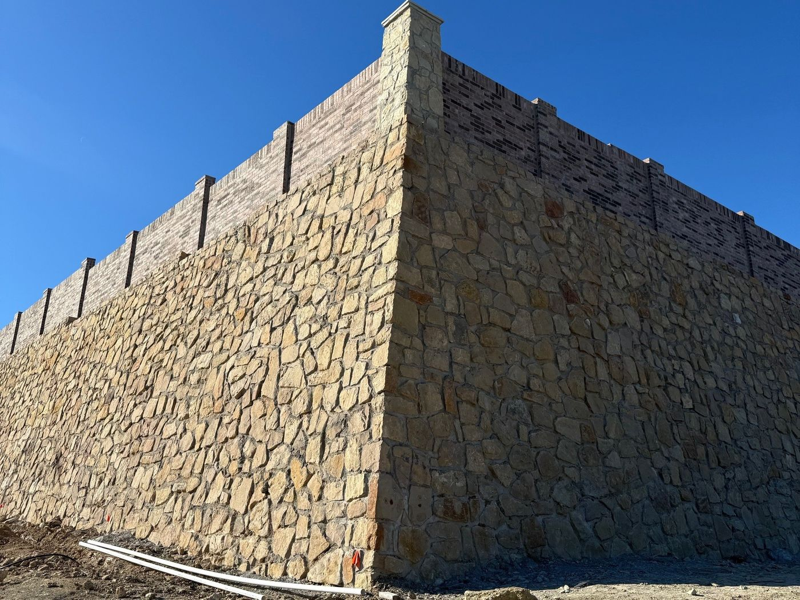

Gravity, segmental and concrete walls
- Masonry and stone gravity walls
- Segmental block with geogrid
- Cantilevered concrete walls
- Gabion and shotcrete walls
Out of Aledo, working all over Texas
DirtSavers engineers retaining walls, screen walls, entry monuments and shade structures for contractors, builders and developers across Texas. Sealed plans for permit, drawn by an engineer who started out in construction. Construction observation is available as a separate scope when a project needs it.

Lower cost never means lower quality. Every design, the most economical one included, meets the building code, the geotechnical recommendations and our own standards before it gets sealed.
Walls, columns and entries we engineered. Read the case studies →




Sealed engineering for the walls and structures that go in after the dirt work. Take one apart in 3D
Perimeter, thoroughfare and property line screen walls, with the piers, columns and foundations under them.
Screen wall design →Community entries, logo columns, sign walls and overhead features, with sealed drawings for permit.
Monument design →Foundations for manufactured shade structures, and custom steel and timber pavilions and cabanas.
Shade structure design →Observation of piers, footings and wall construction, proposed as a separate scope and scheduled around your construction.
Field observation →A check of the slope, the wall and the soil together, for tall walls, tiered walls and walls on slopes or next to water.
Global stability →The usual suspects behind cracked retaining walls, in a short animated video. Sound on. More on how walls fail →
From first call to sealed drawings, plus observation when the job calls for it.
Plans if you have them. If not, photos, a sketch or an address are enough to start.
A written proposal covering scope, fee and schedule. Design starts when it is accepted.
We engineer the walls or structures and deliver a P.E. sealed plan set for city or owner review.
Separately scoped and not part of every engagement. When needed, visits are proposed on their own and tied to the construction schedule.
Testimonial placeholder. A short quote from a contractor, used with their permission.
Name, CompanyTestimonial placeholder. A short quote from a builder or developer, used with their permission.
Name, CompanyTestimonial placeholder. A short quote from a landscape architect or owner, used with their permission.
Name, CompanyThe site or grading plan, the landscape or hardscape plan, and the geotechnical report, if available. Email them to plans@dirtsavers.com or use the upload link on the contact page.
No. Call or email with whatever you have: photos, a sketch, an address or just a question. We will tell you what is needed and follow up with a proposal.
Yes. Design work is done remotely for projects anywhere in Texas. Field visits outside Dallas-Fort Worth are arranged project by project. How that works.
Not automatically. Construction observation is a separate scope and is not part of every design engagement. When a project needs it, we propose it separately, with visits tied to the construction schedule and a written report after each visit.
Yes. We investigate existing walls and provide repair recommendations.